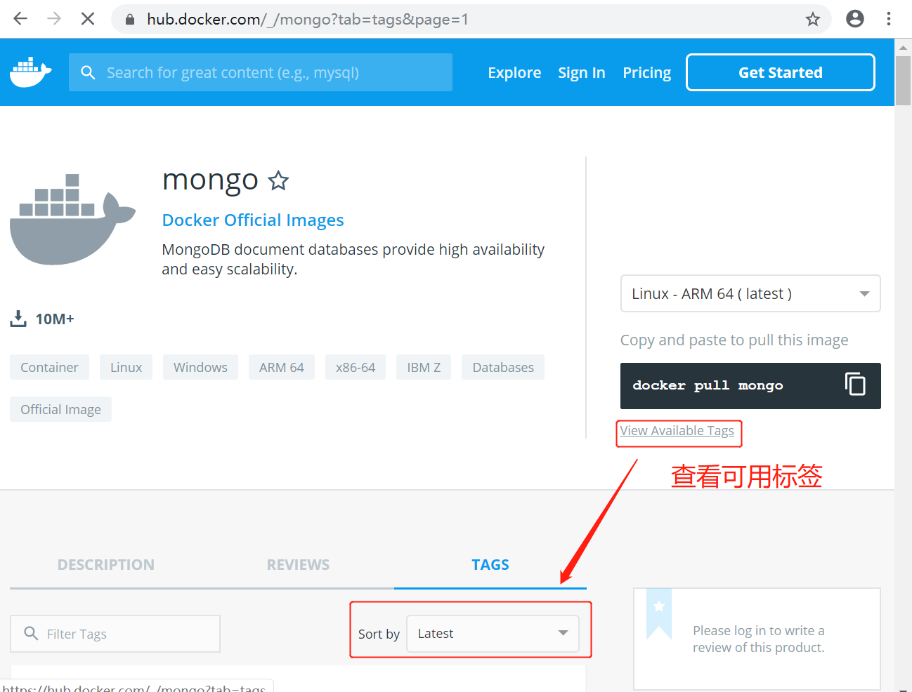
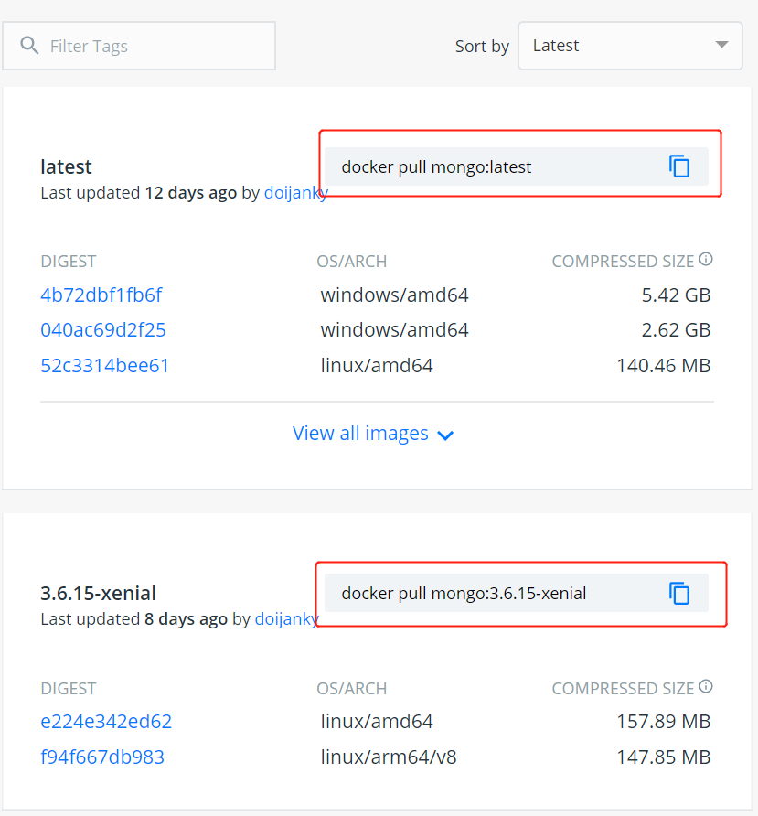

MongoDB 是一个免费的开源跨平台面向文档的 NoSQL 数据库程序。
查看可用的 MongoDB 版本
访问 MongoDB 镜像库地址： https://hub.docker.com/_/mongo?tab=tags&page=1。
可以通过 Sort by 查看其他版本的 MongoDB，默认是最新版本 mongo:latest。

也可以在下拉列表中找到其他你想要的版本：


可以用 docker search mongo 命令来查看可用版本：
$ docker search mongo
NAME DESCRIPTION STARS OFFICIAL AUTOMATED
mongo MongoDB document databases provide high avai… 7160 [OK]
mongo-express Web-based MongoDB admin interface, written w… 768 [OK]
tutum/mongodb MongoDB Docker image – listens in port 27017… 229 [OK]
bitnami/mongodb Bitnami MongoDB Docker Image 126 [OK]
mongoclient/mongoclient Official docker image for Mongoclient, featu… 89 [OK]
mongooseim/mongooseim Small docker image for MongooseIM - robust a… 19
frodenas/mongodb A Docker Image for MongoDB 18 [OK]
cvallance/mongo-k8s-sidecar Kubernetes side car to setup and maintain a … 17 [OK]
arm64v8/mongo MongoDB document databases provide high avai… 9
centos/mongodb-32-centos7 MongoDB NoSQL database server 8
circleci/mongo CircleCI images for MongoDB 8 [OK]
webhippie/mongodb Docker images for MongoDB 7 [OK]
centos/mongodb-36-centos7 MongoDB NoSQL database server 6
istepanov/mongodump Docker image with mongodump running as a cro… 6 [OK]
centos/mongodb-26-centos7 MongoDB NoSQL database server 5
neowaylabs/mongodb-mms-agent This Docker image with MongoDB Monitoring Ag… 4 [OK]
eses/mongodb_exporter mongodb exporter for prometheus 4 [OK]
centos/mongodb-34-centos7 MongoDB NoSQL database server 3
andreasleicher/mongo-azure-backup a docker container to backup a mongodb using… 2 [OK]
openshift/mongodb-24-centos7 DEPRECATED: A Centos7 based MongoDB v2.4 ima… 1
ansibleplaybookbundle/mongodb-apb An APB to deploy MongoDB. 1 [OK]
ekesken/mongo docker image for mongo that is configurable … 1 [OK]
martel/mongo-replica-ctrl A dockerized controller for a Mongo db repli… 0 [OK]
phenompeople/mongodb MongoDB is an open-source, document databas… 0 [OK]
targetprocess/mongodb_exporter MongoDB exporter for prometheus 0 [OK]
取最新版的 MongoDB 镜像
$ docker pull mongo:latest
latest: Pulling from library/mongo
f08d8e2a3ba1: Pull complete
3baa9cb2483b: Pull complete
94e5ff4c0b15: Pull complete
1860925334f9: Pull complete
9d42806c06e6: Pull complete
31a9fd218257: Pull complete
5bd6e3f73ab9: Pull complete
f6ae7a64936b: Pull complete
80fde2cb25c5: Pull complete
80dd04855bec: Pull complete
38c0e96de174: Extracting 58.49MB/142.5MB
b7256055e1ef: Download complete
23bef11da1da: Download complete
$ docker pull mongo:latest
latest: Pulling from library/mongo
f08d8e2a3ba1: Pull complete
3baa9cb2483b: Pull complete
94e5ff4c0b15: Pull complete
1860925334f9: Pull complete
9d42806c06e6: Pull complete
31a9fd218257: Pull complete
5bd6e3f73ab9: Pull complete
f6ae7a64936b: Pull complete
80fde2cb25c5: Pull complete
80dd04855bec: Pull complete
38c0e96de174: Pull complete
b7256055e1ef: Pull complete
23bef11da1da: Pull complete
Digest: sha256:f8dcfaa1d5eab1fec5567ef4e7dedab97b9e41876222fba9c0588cdff312fdf8
Status: Downloaded newer image for mongo:latest
docker.io/library/mongo:latest
查看本地镜像
$ docker images
REPOSITORY TAG IMAGE ID CREATED SIZE
mongo latest 923803327a36 5 hours ago 493MB
mysql latest 3646af3dc14a 7 days ago 544MB
redis latest 41de2cc0b30e 10 days ago 104MB
已经安装了最新版本（latest）的 mongo 镜像。
运行容器
$ docker run -itd --name mongo -p 22017:22017 mongo --auth
9128b8be7ad068ade8bd585abd244634dd16f61163c2f3780cf0cfabcee13ea0
参数说明：
-p 27017:27017 ：映射容器服务的 27017 端口到宿主机的 27017 端口。外部可以直接通过 宿主机 ip:27017 访问到 mongo 的服务。
–auth：需要密码才能访问容器服务。
安装验证
$ docker ps
CONTAINER ID IMAGE COMMAND CREATED STATUS PORTS NAMES
9128b8be7ad0 mongo "docker-entrypoint.s…" About a minute ago Up About a minute 0.0.0.0:22017->22017/tcp, 27017/tcp mongo
使用以下命令添加用户和设置密码，并且尝试连接。
$ docker exec -it mongo mongo admin
# 创建一个名为 admin，密码为 123456 的用户。
> db.createUser({ user:'admin',pwd:'123456',roles:[ { role:'userAdminAnyDatabase', db: 'admin'}]});
# 尝试使用上面创建的用户信息进行连接。
> db.auth('admin', '123456')
$ docker exec -it mongo mongo admin
MongoDB shell version v4.4.1
connecting to: mongodb://127.0.0.1:27017/admin?compressors=disabled&gssapiServiceName=mongodb
Implicit session: session { "id" : UUID("cb7e2d23-92ce-40d2-b775-4b5e1378ecff") }
MongoDB server version: 4.4.1
Welcome to the MongoDB shell.
For interactive help, type "help".
For more comprehensive documentation, see
https://docs.mongodb.com/
Questions? Try the MongoDB Developer Community Forums
https://community.mongodb.com
>
> db.createUser({user:'admin',pwd:'123456',roles:[{role:'userAdminAnyDatabase',db:'admin'}]});
Successfully added user: {
"user" : "admin",
"roles" : [
{
"role" : "userAdminAnyDatabase",
"db" : "admin"
}
]
}
> db.auth('admin','123456')
1